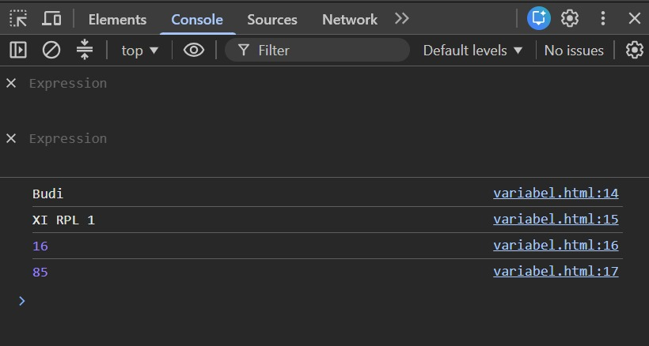
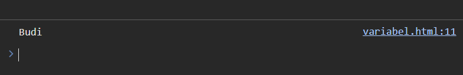
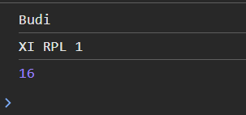
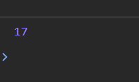
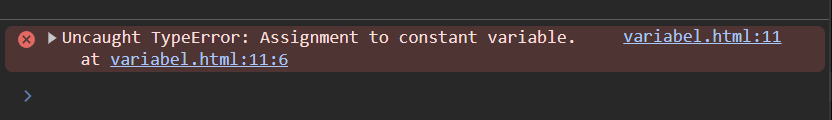
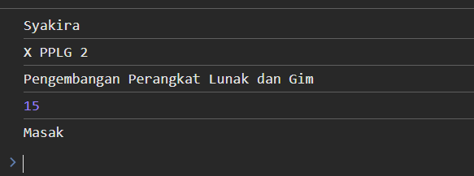
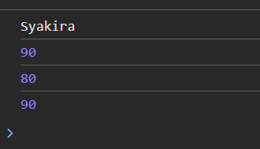
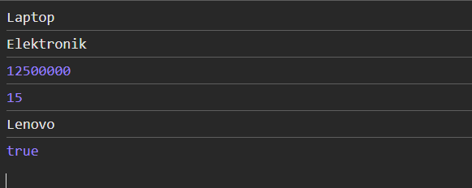

Mata Pelajaran: Dasar-Dasar Pengembangan Perangkat Lunak dan Gim[cite: 1]
Materi: Variable pada JavaScript[cite: 1]
Alokasi Waktu: 2 x 45 menit[cite: 1]
Model Pembelajaran: Problem Based Learning / Discovery Learning[cite: 1]
Metode: Eksplorasi, praktik, diskusi, tanya jawab, refleksi[cite: 1]
Setelah menyelesaikan kegiatan pembelajaran ini, peserta didik diharapkan mampu:[cite: 1]
Dalam kegiatan praktik:[cite: 1]
Bayangkan kamu sedang membuat aplikasi data siswa.[cite: 2]
Program perlu mengetahui:[cite: 2]
Contohnya:[cite: 2]
Nama siswa = "Budi" Kelas = "XI RPL 1" Umur = 16 Nilai = 85
Menurutmu, bagaimana cara menyimpan informasi tersebut di dalam program?[cite: 2]
Cara menyimpan informasi tersebut adalah dengan membuat wadah data berupa variable (menggunakan let atau const) kemudian memasukkan nilainya ke dalam nama variable yang sesuai.

Perhatikan kode berikut:[cite: 2]
let nama = "Budi"; let umur = 16; let nilai = 85; console.log(nama); console.log(umur); console.log(nilai);
Jalankan kode tersebut menggunakan browser.[cite: 2]
1. Apa yang ditampilkan pada Console?[cite: 3]
Budi
16
85
2. Menurutmu, apa fungsi nama, umur, dan nilai ?[cite: 3]
Sebagai nama variabel yang menyimpan data nilai teks/angka agar dapat digunakan atau dipanggil kembali oleh program.
3. Apa yang terjadi jika kode berikut dijalankan?[cite: 3]
console.log(nama);
Program akan menampilkan nilai yang tersimpan di dalam variable nama ke Console, yaitu Budi.

1px solid var(--border color); border-radius:4p; margin-top: 0.5rem; ;" /br>4. Menurut dugaanmu, apa yang dimaksud dengan variable?[cite: 3]
Variabel adalah wadah atau tempat penyimpanan sementara di dalam memori komputer untuk menampung data yang dapat digunakan atau diubah saat program berjalan.
1. Apa itu Variable?[cite: 3]
Variable dapat dianggap sebagai tempat untuk menyimpan sebuah data agar data tersebut dapat digunakan kembali oleh program.[cite: 3]
Contoh: let nama = "Andi";[cite: 3]
Dapat dibayangkan seperti kotak bertuliskan nama yang berisi data "Andi".[cite: 3]
Pada kode let nama = "Andi"; terdapat:[cite: 4]
| Bagian[cite: 4] | Fungsi[cite: 4] |
|---|---|
let[cite: 4] |
Membuat variable[cite: 4] |
nama[cite: 4] |
Nama variable[cite: 4] |
=[cite: 4] |
Memberikan nilai[cite: 4] |
"Andi"[cite: 4] |
Nilai yang disimpan[cite: 4] |
Buat file: variable.html[cite: 4]
Kemudian masukkan kode berikut:[cite: 4]
<!DOCTYPE html>
<html>
<head>
<title>Belajar Variable</title>
</head>
<body>
<script>
let nama = "Budi";
let kelas = "XI RPL 1";
let umur = 16;
console.log(nama);
console.log(kelas);
console.log(umur);
</script>
</body>
</html>
Buka file tersebut menggunakan browser. Buka: Klik kanan → Inspect → Console[cite: 4, 5]
Nama : Budi[cite: 5]
Kelas : XI RPL 1[cite: 5]
Umur : 16[cite: 5]

1px solid var(--border color); border-radius:4p; margin-top: 0.5rem;Sekarang ubahlah program sebelumnya. Ubah nama, kelas, dan umur sesuai data kamu sendiri.[cite: 5]
1. Apakah hasil pada Console berubah?[cite: 5]
Ya, hasil pada Console berubah sesuai dengan data baru yang dimasukkan.
2. Bagian kode mana yang kamu ubah?[cite: 5]
Nilai yang ada di dalam tanda petik pada variabel (misal: nilai dari "Budi" diubah menjadi "Syakira") dan nilai angka dari variabel umur.
3. Mengapa program dapat menampilkan data yang baru?[cite: 6]
Karena nilai di dalam variabel telah diperbarui (diisi ulang), sehingga saat perintah console.log() dipanggil, program membaca nilai terbaru yang tersimpan di dalam variabel tersebut.
JavaScript dapat menyimpan berbagai jenis data.[cite: 6]
let nama = "Andi"; let umur = 17; let tinggi = 170; let aktif = true;
Identifikasi data tersebut:[cite: 6]
| Variable[cite: 6] | Nilai[cite: 6] | Jenis Data[cite: 6] |
|---|---|---|
nama[cite: 6] |
"Andi"[cite: 6] | String (Teks) |
umur[cite: 6] |
17[cite: 6] | Number (Angka) |
tinggi[cite: 6] |
170[cite: 6] | Number (Angka) |
aktif[cite: 6] |
true[cite: 6] | Boolean (Benar/Salah) |
Data yang ditulis menggunakan tanda kutip seperti "Andi" merupakan data: String / Teks[cite: 6]
Sedangkan 17 merupakan data: Number / Angka[cite: 6]
Perhatikan kode berikut:[cite: 7]
let umur = 16; umur = 17; console.log(umur);
Hasil: 17[cite: 7]

1px solid var(--border color); border-radius:4p; margin-top: 0.5rem;Sekarang coba:[cite: 7]
const nama = "Budi"; nama = "Andi"; console.log(nama);
Terjadi error (TypeError: Assignment to constant variable), karena variabel yang dibuat dengan const nilainya tetap dan tidak dapat diubah/diisi ulang.

1px solid var(--border color); border-radius:4p; margin-top: 0.5rem;Kesimpulan Sementara:[cite: 7]
| Keyword[cite: 7] | Nilai dapat diubah?[cite: 7] | Kegunaan sederhana[cite: 7] |
|---|---|---|
let[cite: 7] |
Ya | Untuk data yang nilainya masih mungkin berubah (dinamis).[cite: 8] |
const[cite: 7] |
Tidak | Untuk data yang nilainya tetap dan tidak boleh diubah (konstan).[cite: 8] |
let untuk data yang masih mungkin berubah (Contoh: let nilai = 80; nilai = 90;).[cite: 8]const untuk data yang tidak perlu diubah (Contoh: const namaSekolah = "SMKN 1 Garut";).[cite: 8]
Beberapa aturan dasar:[cite: 8]
Diperbolehkan: let nama;, let namaSiswa;, let nama_siswa;, let nilai1;[cite: 8]
Tidak diperbolehkan: let 1nama;, let nama siswa;, let nama-siswa;[cite: 9]
let nama = "Andi"; console.log(nama); berbeda dengan console.log(Nama);.[cite: 9]
Memberikan tanda (V) pada nama variable yang benar dan tanda (X) pada yang salah:[cite: 9]
| No.[cite: 9] | Nama Variable[cite: 9] | V / X |
|---|---|---|
| 1 | nama[cite: 9] | V |
| 2 | namaSiswa[cite: 9] | V |
| 3 | nama_siswa[cite: 9] | V |
| 4 | 2nama[cite: 9] | X |
| 5 | nama siswa[cite: 9] | X |
| 6 | nilaiAkhir[cite: 9] | V |
| 7 | nilai1[cite: 9] | V |
| 8 | nilai-akhir[cite: 9] | X |
| 9 | Alamat[cite: 9] | V |
| 10 | alamatSiswa[cite: 9] | V |
• 2nama → Menjadi: nama2 atau namaDua[cite: 9, 10]
• nama siswa → Menjadi: namaSiswa atau nama_siswa[cite: 10]
• nilai-akhir → Menjadi: nilaiAkhir atau nilai_akhir[cite: 10]
Buat program JavaScript yang menyimpan data diri menggunakan minimal 5 variable.[cite: 10]
// Kode versi Syakira let nama = "Syakira"; let kelas = "X PPLG 2"; let jurusan = "Pengembangan Perangkat Lunak dan Gim"; let umur = 15; let hobi = "Masak"; console.log(nama); console.log(kelas); console.log(jurusan); console.log(umur); console.log(hobi);

1px solid var(--border color); border-radius:4p; margin-top: 0.5rem;Program untuk menyimpan data seorang siswa dan nilainya.[cite: 11]
let nama = "Syakira"; let bahasaIndonesia = 88; let matematika = 90; let produktif = 95; console.log(nama); console.log(bahasaIndonesia); console.log(matematika); console.log(produktif);

1px solid var(--border color); border-radius:4p; margin-top: 0.5rem;Pertanyaan & Jawaban:[cite: 11]
1. Berapa variable yang kamu buat?[cite: 11]
4 variable.
2. Mana variable yang menyimpan teks?[cite: 11]
Variable nama.
3. Mana variable yang menyimpan angka?[cite: 12]
Variable bahasaIndonesia, matematika, dan produktif.
Kode bermasalah:[cite: 12]
let nama siswa = "Budi"; let umur = 16; let 2kelas = "XI RPL"; console.log(nama siswa); console.log(umur); console.log(2kelas);
let namaSiswa = "Budi"; let umur = 16; let kelas2 = "XI RPL"; console.log(namaSiswa); console.log(umur); console.log(kelas2);
Apa saja kesalahan yang kamu temukan?[cite: 12]
1. Penamaan nama siswa menggunakan spasi.[cite: 12]
2. Penamaan 2kelas diawali dengan angka.[cite: 12]
3. Penganggilan console.log(nama siswa) dan console.log(2kelas) ikut salah karena mengikuti variabel yang salah.[cite: 12]
Program "Profil Siswa" (Pengembangan minimal 2 variable baru).[cite: 12, 13]
const nama = "Syakira"; const kelas = "X PPLG 2"; const jurusan = "Pengembangan Perangkat Lunak dan Gim"; const umur = 15; const kota = "Garut"; const hobi = "Coding"; const citaCita = "Software Engineer"; // Variable tambahan const sekolah = "SMKN 1 Garut"; const statusAktif = true; console.log(nama); console.log(kelas); console.log(jurusan); console.log(umur); console.log(kota); console.log(hobi); console.log(citaCita); console.log(sekolah); console.log(statusAktif);
Variable tambahan:[cite: 13]
1. sekolah[cite: 13]
2. statusAktif[cite: 13]
Think:[cite: 13] Menurutmu, mengapa programmer membutuhkan variable?[cite: 13]
Jawaban: Agar data dapat disimpan dengan rapi, mudah dipanggil kembali, serta nilainya dapat diolah atau diperbarui dengan efisien tanpa perlu mengetik ulang datanya.
Pair:[cite: 14] Membandingkan dengan teman (Apakah jawaban kalian sama?): Ya[cite: 14]
Share:[cite: 14] Kesimpulan kelompok: Variable sangat penting dalam pemrograman untuk mengorganisasi data dan efisiensi penulisan kode.
Berikan tanda ✓ sesuai dengan pemahamanmu.[cite: 14]
| Pernyataan[cite: 14] | Belum Paham[cite: 14] | Mulai Paham[cite: 14] | Paham[cite: 14] |
|---|---|---|---|
| Saya memahami pengertian variable[cite: 14] | |||
Saya dapat membuat variable dengan let[cite: 14] |
|||
Saya memahami penggunaan const[cite: 14] |
|||
| Saya dapat menyimpan data ke dalam variable[cite: 14] | |||
Saya dapat menampilkan variable dengan console.log()[cite: 14] |
|||
| Saya dapat memberikan nama variable dengan benar[cite: 14] | |||
| Saya dapat menemukan kesalahan variable[cite: 14] |
3 Hal yang Saya Pelajari:[cite: 15]
1. Pengertian dan fungsi variabel dalam JavaScript.[cite: 15]
2. Perbedaan penggunaan let dan const.[cite: 15]
3. Aturan tata cara penamaan variabel yang benar.[cite: 15]
2 Hal yang Masih Membingungkan:[cite: 15]
1. Kapan secara spesifik harus memilih tipe data kompleks dibanding tipe dasar.
2. Menangani error scope variabel saat kode sudah sangat panjang.
1 Hal yang Ingin Saya Coba:[cite: 15]
1. Membuat aplikasi kalkulator interaktif menggunakan variabel JavaScript.
Lengkapi kalimat berikut:[cite: 15]
• Variable adalah: tempat untuk menyimpan data di dalam memori agar dapat digunakan kembali oleh program.[cite: 3, 15]
• let digunakan untuk: membuat variabel yang nilainya dapat diubah-ubah.[cite: 8, 15]
• const digunakan untuk: membuat variabel yang nilainya bersifat tetap (konstan) dan tidak bisa diubah.[cite: 8, 15]
• Untuk menampilkan isi variable ke Console kita dapat menggunakan: console.log()[cite: 15]
Program Tema: "Data Produk Sederhana"[cite: 16]
const namaProduk = "Laptop Gaming"; const kategori = "Elektronik"; const harga = 12500000; let stok = 15; const merek = "Asus"; const tersedia = true; console.log(namaProduk); console.log(kategori); console.log(harga); console.log(stok); console.log(merek); console.log(tersedia);

1px solid var(--border color); border-radius:4p; margin-top: 0.5rem;1. Penilaian Pengetahuan[cite: 17]
| Indikator[cite: 17] | Skor[cite: 17] |
|---|---|
| Menjelaskan pengertian variable[cite: 17] | 20[cite: 17] |
| Menjelaskan fungsi variable[cite: 17] | 15[cite: 17] |
| Membedakan let dan const[cite: 17] | 20[cite: 17] |
| Menjelaskan aturan penamaan variable[cite: 17] | 15[cite: 17] |
| Menjelaskan jenis data sederhana[cite: 17] | 10[cite: 17] |
| Total[cite: 17] | 80[cite: 17] |
2. Penilaian Keterampilan[cite: 17]
| Aspek[cite: 17] | 1[cite: 17] | 2[cite: 17] | 3[cite: 17] | 4[cite: 17] |
|---|---|---|---|---|
| Membuat variable[cite: 17] | ||||
| Penamaan variable[cite: 17] | ||||
| Penggunaan let / const[cite: 17] | ||||
| Menampilkan data[cite: 17] | ||||
| Ketepatan kode[cite: 17] | ||||
| Debugging[cite: 17] |
| Sikap[cite: 17, 18] | 1[cite: 17, 18] | 2[cite: 17, 18] | 3[cite: 17, 18] | 4[cite: 17, 18] |
|---|---|---|---|---|
| Kedisiplinan[cite: 17] | ||||
| Kerja sama[cite: 17] | ||||
| Tanggung jawab[cite: 18] | ||||
| Keaktifan[cite: 18] | ||||
| Ketelitian[cite: 18] |
| Kriteria[cite: 18] | Bobot[cite: 18] |
|---|---|
| Program dapat dijalankan[cite: 18] | 20%[cite: 18] |
| Penggunaan variable benar[cite: 18] | 20%[cite: 18] |
| Penamaan variable benar[cite: 18] | 15%[cite: 18] |
| Penggunaan let dan const tepat[cite: 18] | 15%[cite: 18] |
| Data yang digunakan sesuai[cite: 18] | 10%[cite: 18] |
| Output berhasil ditampilkan[cite: 18] | 10%[cite: 18] |
| Kerapian kode[cite: 18] | 10%[cite: 18] |
| Total[cite: 18] | 100%[cite: 18] |
1. Apa itu variable?[cite: 18]
Wadah untuk menyimpan nilai data di memori program.
2. Apa perbedaan let dan const ?[cite: 18]let nilainya bisa diubah-ubah, sedangkan const nilainya tetap dan tidak bisa diubah.
3. Tuliskan satu contoh variable JavaScript.[cite: 18]const namaSiswa = "Syakira";
Jangan takut ketika program menghasilkan error.[cite: 19]
Error bukan berarti kamu gagal.[cite: 19]
Error adalah petunjuk bahwa programmu perlu diperbaiki.[cite: 19]
Programmer yang baik bukan programmer yang tidak pernah mengalami error, tetapi programmer yang mampu mencari dan memperbaiki error.[cite: 19]